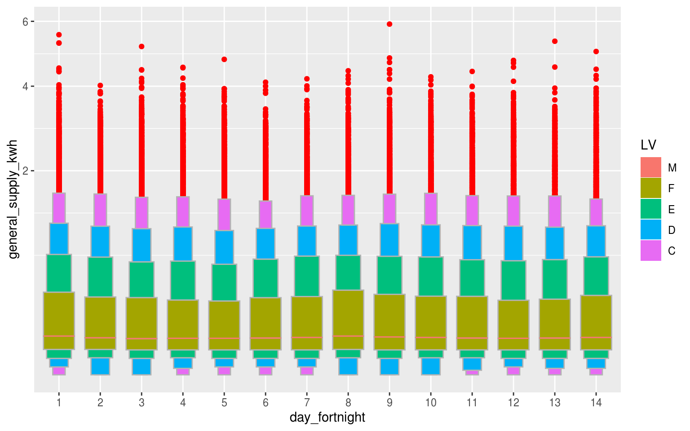
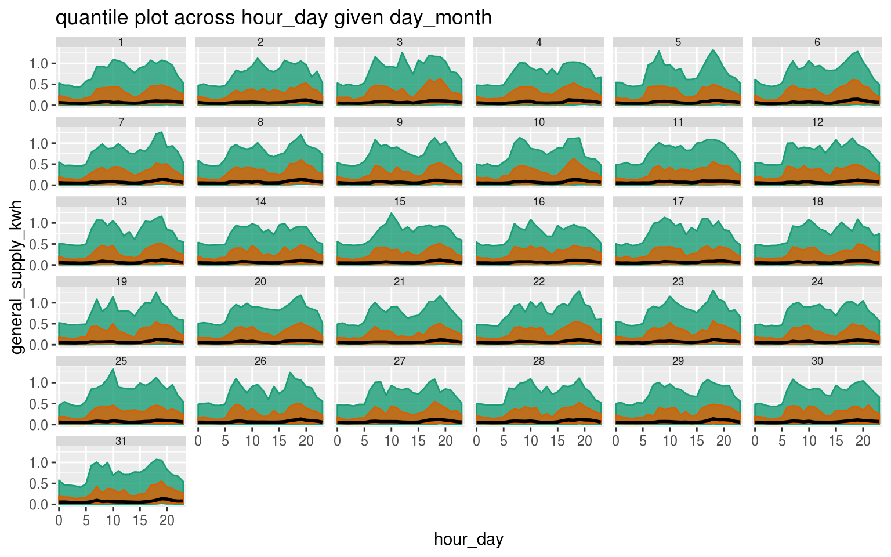
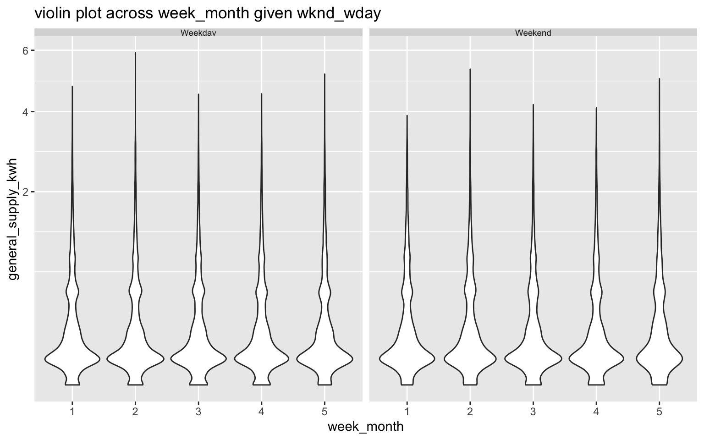

vignettes/gravitas_vignette.Rmd
gravitas_vignette.RmdTemporal data are available at various resolution depending on context. Often in time series analysis, data collected at finer scale needs to be explored also at coarser temporal scales. This approach requires deconstructing time in various possible ways leading to linear (e.g. days, weeks), circular (e.g. day-of-week) or aperiodic (e.g. day-of-month) time granularities. The hierarchical structure of time also creates a natural nested ordering resulting in single or multiple order-up granularities. For a conventional Gregorian calendar, examples of single-order-up granularity may include hour-of-day, minute-of-hour and examples of multiple-order-up granularity may include hour-of-week or minute-of-day. All of these granularites might be useful in throwing light on the periodicity of the data depending on the context.
Exploration of large quantities of temporal data across so many different deconstructions of time becomes clumsy without a systematic approach.
In this vignette, we describe the tools in the package gravitas for systematically exploring large quantities of temporal data across different time deconstructions by visualizing the probability distributions using range of graphics in ggplot2 by making allowances for the following aspects of time granularities:
search_gran
The smart_meter10 data in the package is a tsibble providing the energy consumption for ten households from customer trials.
smart_meter10 %>% select(
customer_id,
reading_datetime,
general_supply_kwh,
everything()
)
#> # A tsibble: 259,235 x 8 [30m] <UTC>
#> # Key: customer_id [15]
#> customer_id reading_datetime general_supply_… event_key
#> <chr> <dttm> <dbl> <dbl>
#> 1 10006704 2012-06-01 10:00:00 0.24 0
#> 2 10006704 2012-06-01 10:30:00 0.245 0
#> 3 10006704 2012-06-01 11:00:00 0.206 0
#> 4 10006704 2012-06-01 11:30:00 0.217 0
#> 5 10006704 2012-06-01 12:00:00 0.214 0
#> 6 10006704 2012-06-01 12:30:00 0.23 0
#> 7 10006704 2012-06-01 13:00:00 0.898 0
#> 8 10006704 2012-06-01 13:30:00 0.197 0
#> 9 10006704 2012-06-01 14:00:00 0.255 0
#> 10 10006704 2012-06-01 14:30:00 0.199 0
#> # … with 259,225 more rows, and 4 more variables:
#> # controlled_load_kwh <dbl>, gross_generation_kwh <dbl>,
#> # net_generation_kwh <dbl>, other_kwh <dbl>This is a regular tsibble with energy demand general_supply_kwh available every 30 minutes from 2012 to 2014. Typically, the first thing we should have at our disposal for examining periodicities of energy behavior across time granularities is to know the number of time granularities we can look at exhaustively. If we consider conventional time deconstructions for a Gregorian calendar, the following time granularities can be considered for analysis.
smart_meter10 %>% search_gran()
#> [1] "hhour_hour" "hhour_day" "hhour_week"
#> [4] "hhour_fortnight" "hhour_month" "hhour_quarter"
#> [7] "hhour_semester" "hhour_year" "hour_day"
#> [10] "hour_week" "hour_fortnight" "hour_month"
#> [13] "hour_quarter" "hour_semester" "hour_year"
#> [16] "day_week" "day_fortnight" "day_month"
#> [19] "day_quarter" "day_semester" "day_year"
#> [22] "week_fortnight" "week_month" "week_quarter"
#> [25] "week_semester" "week_year" "fortnight_month"
#> [28] "fortnight_quarter" "fortnight_semester" "fortnight_year"
#> [31] "month_quarter" "month_semester" "month_year"
#> [34] "quarter_semester" "quarter_year" "semester_year"The default for search gran in this case, provides temporal granularities ranging from half-hour to year. If these options are considered too many, the default options can be modified to limit the possibilities. For example, the most coarse temporal unit can be set to be a “month”.
smart_meter10 %>%
search_gran(highest_unit = "month")
#> [1] "hhour_hour" "hhour_day" "hhour_week"
#> [4] "hhour_fortnight" "hhour_month" "hour_day"
#> [7] "hour_week" "hour_fortnight" "hour_month"
#> [10] "day_week" "day_fortnight" "day_month"
#> [13] "week_fortnight" "week_month" "fortnight_month"This looks better. However, some intermediate temporal units might not be pertinent to the analysis and we might want to remove them from the list of granularities that we want to examine.
create_gran()
After we have the set of granularities to look at, we should be able to compute any granularity using create_gran. These can be be used for exploring distribution of the time series across univariate temporal granularity or computing summary statistics across these categorizations.
smart_meter10 %>%
create_gran("day_fortnight") %>%
ggplot2::ggplot(aes(
x = as.factor(day_fortnight),
y = general_supply_kwh
)) +
scale_y_sqrt() +
xlab("day_fortnight") +
geom_lv(
outlier.colour = "red",
aes(fill = ..LV..),
k = 5
) +
scale_color_brewer(palette = "Dark2")
smart_meter10 %>%
create_gran("day_fortnight") %>%
group_by(day_fortnight)
#> # A tsibble: 259,235 x 9 [30m] <UTC>
#> # Key: customer_id [10]
#> # Groups: day_fortnight [14]
#> customer_id reading_datetime event_key general_supply_…
#> <chr> <dttm> <dbl> <dbl>
#> 1 10006704 2012-06-01 10:00:00 0 0.24
#> 2 10006704 2012-06-01 10:30:00 0 0.245
#> 3 10006704 2012-06-01 11:00:00 0 0.206
#> 4 10006704 2012-06-01 11:30:00 0 0.217
#> 5 10006704 2012-06-01 12:00:00 0 0.214
#> 6 10006704 2012-06-01 12:30:00 0 0.23
#> 7 10006704 2012-06-01 13:00:00 0 0.898
#> 8 10006704 2012-06-01 13:30:00 0 0.197
#> 9 10006704 2012-06-01 14:00:00 0 0.255
#> 10 10006704 2012-06-01 14:30:00 0 0.199
#> # … with 259,225 more rows, and 5 more variables:
#> # controlled_load_kwh <dbl>, gross_generation_kwh <dbl>,
#> # net_generation_kwh <dbl>, other_kwh <dbl>, day_fortnight <fct>If we want to look at two of these granularities at a time, it is equivalent to choosing 6 permutation 2 pairs, which essentially means we need to examine 30 plots. However, we need to be cognizant of how these granularities interact. Harmony/clash can be identified to considerably reduce the number of visualizations that can aid exploratory analysis.
smart_meter10 %>%
is_harmony(gran1 = "hour_day",
gran2 = "day_week")
#> [1] "TRUE"
smart_meter10 %>%
is_harmony(gran1 = "hour_day",
gran2 = "day_week",
facet_h = 14)
#> [1] "FALSE"
smart_meter10 %>%
is_harmony(gran1 = "day_month",
gran2 = "week_month")
#> [1] "FALSE"Let us now look at all the harmonies that we can examine. Fortunately, we are left with only 13 out of 30 visualizations.
smart_meter10 %>% harmony(
ugran = "month",
filter_out = c("hhour", "fortnight")
)
#> # A tibble: 13 x 4
#> facet_variable x_variable facet_levels x_levels
#> <chr> <chr> <int> <int>
#> 1 day_week hour_day 7 24
#> 2 day_month hour_day 31 24
#> 3 week_month hour_day 5 24
#> 4 day_month hour_week 31 168
#> 5 week_month hour_week 5 168
#> 6 day_week hour_month 7 744
#> 7 hour_day day_week 24 7
#> 8 day_month day_week 31 7
#> 9 week_month day_week 5 7
#> 10 hour_day day_month 24 31
#> 11 day_week day_month 7 31
#> 12 hour_day week_month 24 5
#> 13 day_week week_month 7 5We want to view distribution of the measured variable general_supply_kwh across these harmonies through different distribution plots using prob_plot. shows quantile plot of energy consumption across day-month (x-axis) and hour-day (facet). This will help us to see if for each hour of the day, energy consumption changes across different days of the month. From the plot, we see there is not much variation across day-of-month. Moving on, if we want to switch the facet and x-axis variable, we simply reverse the order of time granularities. Here, prob_plot would output a ggplot2 object. So we are free to add any element to the default plot. shows quantile plot of energy consumption across day-month (facet) and hour-day (x-axis). This plot shows the daily pattern of consumption for each day of the month. There is a morning and evening peak in consumption.
smart_meter10 %>%
prob_plot("hour_day",
"day_month",
response = "general_supply_kwh",
plot_type = "quantile",
quantile_prob = c(0.1, 0.25, 0.5, 0.75, 0.9),
symmetric = TRUE
) +
scale_y_sqrt()
#> Warning in gran_warn(.data, gran1, gran2, hierarchy_tbl = hierarchy_tbl, : Number of observations for few combinations of
#> granularities vary within or across facets.
#> Use gran_obs() to find combinations which have low
#> observations or very different number of observations.Quantile plot across hour-day as facets and day-month across x-axis
smart_meter10 %>%
prob_plot("day_month",
"hour_day",
response = "general_supply_kwh",
plot_type = "quantile",
quantile_prob = c(0.1, 0.25, 0.5, 0.75, 0.9),
symmetric = TRUE
)
#> Warning in gran_warn(.data, gran1, gran2, hierarchy_tbl = hierarchy_tbl, : Number of observations for few combinations of
#> granularities vary within or across facets.
#> Use gran_obs() to find combinations which have low
#> observations or very different number of observations.
shows letter-value plot of energy consumption across wknd_wday (facet) and hour-day (x-axis). On weekdays, letter value C (lower tail) from 7 hours to 16 hours is not distinctly visible for most hours on weekdays compared to weekends, signifying there might be less volatility in these hours for weekdays. Similar observations can be made for letter values C and D which closely follow M, F, E on weekdays, but not on weekends. Letter value plots are useful for examining the distribution of the tail of the distribution.
Currently, we can choose from “boxplot”, “violin”, “ridge”, “lv” or “quantile” to visualize distributions.
smart_meter10 %>% prob_plot("wknd_wday",
"week_month",
response = "general_supply_kwh",
plot_type = "violin"
) + scale_y_sqrt()
#> Warning in gran_warn(.data, gran1, gran2, hierarchy_tbl = hierarchy_tbl, : Number of observations for few combinations of
#> granularities vary within or across facets.
#> Use gran_obs() to find combinations which have low
#> observations or very different number of observations.
This provides an useful warning suggesting distribution should be computed with caution as number of observations might vary or not be enough for computing distribution plots.
smart_meter10 %>% gran_obs(
"week_month",
"wknd_wday"
)
#> # A tibble: 2 x 6
#> wknd_wday `1` `2` `3` `4` `5`
#> <chr> <dbl> <dbl> <dbl> <dbl> <dbl>
#> 1 Weekday 42348 42195 43144 42468 14695
#> 2 Weekend 17008 17024 17347 17094 5912In this case, number of observations are much less on weekends compared to weekdays, but enough to have reliable estimates of distribution.
We can also have recommendations on plots and general check points before plotting two granularities using gran_advice.
smart_meter10 %>% gran_advice(
"week_month",
"wknd_wday"
)
#> $harmony
#> [1] "TRUE"
#>
#> $homogenous
#> # A tibble: 1 x 2
#> inter_facet intra_facet
#> <chr> <chr>
#> 1 FALSE FALSE
#>
#> $plot_choices
#> [1] "ridge" "violin" "lv" "quantile"
#>
#> $gran_obs
#> # A tibble: 2 x 6
#> wknd_wday `1` `2` `3` `4` `5`
#> <chr> <dbl> <dbl> <dbl> <dbl> <dbl>
#> 1 Weekday 42348 42195 43144 42468 14695
#> 2 Weekend 17008 17024 17347 17094 5912Recommendations for distribution plots depend on the levels of the two granularities plotted. They will vary depending on which granularity is placed on the x-axis and which one across facets. Assumptions are made to ensure display is not too cluttered by the space occupied by various kinds of distribution plots. Moreover, the recommendation system ensures that there are just enough observations before choosing a distribution plot.
prob_plot choose the recommended plots only if plot_type = NULL. Warnings are generated if users try to plot clashes, number of facet variables are too high or number of observations used to compute statistical summaries for distribution are not large enough.
Thanks to PhD supervisors Prof. Rob J Hyndman, Prof. Dianne Cook and Google Summer of Code 2019 mentor Prof. Antony Unwin for their support and always leading by example. The fine balance of encouraging me to work on my ideas and stepping in to help when I need has made the devlopment of this package a great learning experience for me.
Moreover, I want to thank my cohort at NUMBATS at Monash University for always lending an ear and sharing their wisdom and experience on developing R packages whenever needed.